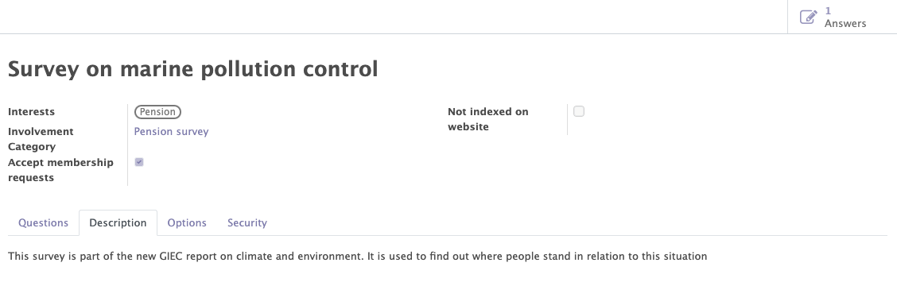
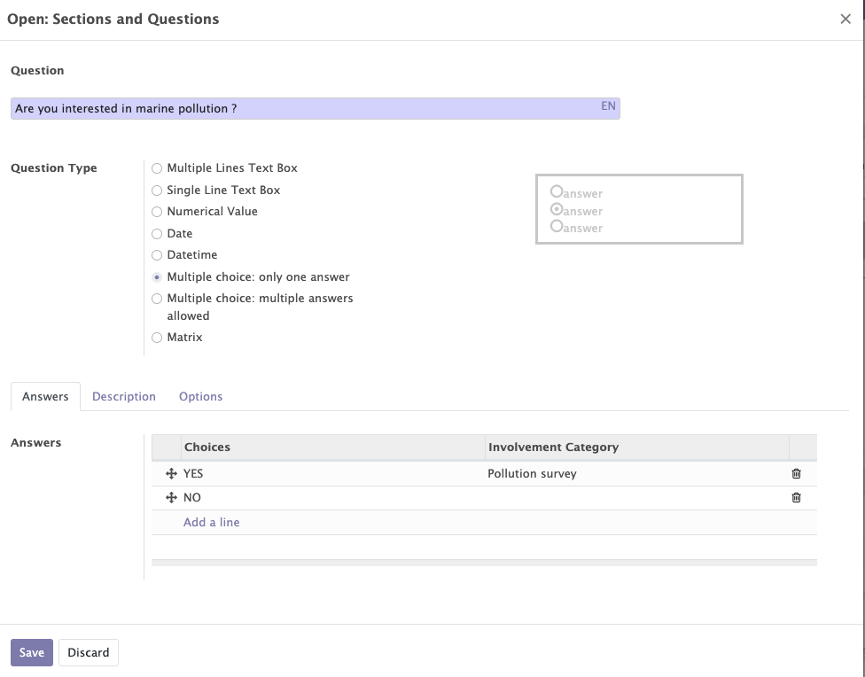
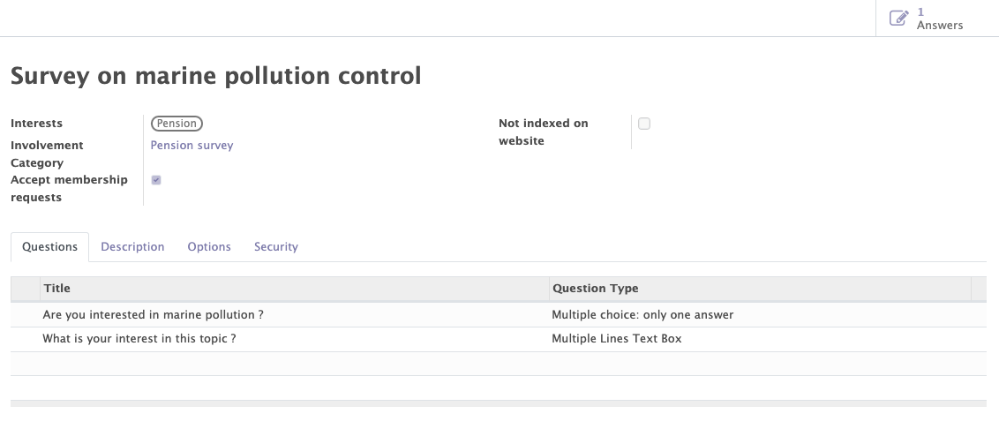
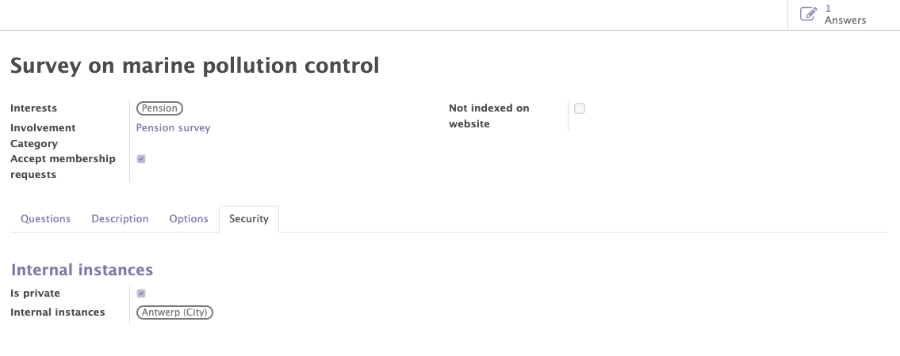

Surveys
The Odoo standard survey module enables you to manage the different surveys of your organisation. The Mozaik module adds a few new features:
- The automatic recognition of partners
- The collection of reusable data about attendees, based on their responses.
- The surveys access management, in order to limit access to certain users.
General informations on Mozaik surveys
This functionality allows you to create, modify and manage the surveys related to your organisation.
Various informations can/must be completed on the survey form :
- The standard information of the survey (name, description, questions...).
- The interests related to the survey.
- The involvements categories related to the survey.

The survey questions
Surveys are composed of questions, that can be arranged in a desired order. For each question, differents types of answers are available (free text, multiple choices, date...).
For some of those answer types, Mozaik makes it possible to reuse the answers encoded by the participant to gather general information about the contact. This functionality can be used to collect interests and involvements (such as for the events or petitions), but general information can be collected as well from the responses of the participant. For instance: the contact's name, email, address, birthdate etc...


Partner recognition
When a person fills in a survey, the system will try to detect (based on several criteria) whether this person can be linked to an existing partner in the Odoo database. If this is not the case, a new partner will automatically be created.
Thanks to this feature, you can expand your organization's list of contacts and then recontact them for future petitions, events, surveys...
The access limitations
In the "security" tab, you can decide to limit the visibility of a specific survey to the users linked to an internal instance (and its parent instances).
Example
I only want people from a certain instance (and its parent instances) to access the survey.
